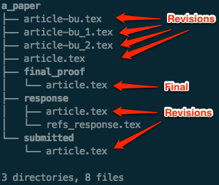

Introduction¶
What is version control?¶
Version control, a.k.a. revision control / source code management, is basically a system for recording and managing changes made to files and folders. It is commonly used to manage source code, however, it is also well suited to tracking changes to any kind of file which contains mostly text. It can also be used by a lone developer or as a means for many people to share and collaborate on projects efficiently and safely.
Chances are, you already employ your own version control system, even if you don’t realise it... Many modern editors such as Microsoft Word and Apple Pages have this facility built in. Also Dropbox maintains a full history of all of the files you have deletes and edited during the last month.
You have almost certainly employed your own simple form of a version control system in the past. Here is an example:
This image shows the files and folders making up a paper fictitious paper submission. There are a number of saved copies of the final article.tex which have created incrementally as the paper has been written, redrafted and submitted. These are called revisions. By looking at any of these revisions we are able to see the state of the paper as it was when the revision file was saved. By comparing revision files we can also get a rough idea of how the paper developed and changed as it was written. Of course, the more saved revisions we have, the easier it is to piece together how things changed over time.
Why you should use it (for everything)¶
“In practice, everything that has been created manually should be put in version control, including programs, original field observations, and the source files for papers.“
—Best Practices for Scientific Computing; Wilson et al. 2012 (arXiv:1210.0530)
In important aspect of any scientific endeavour is reproducibility. We should be able to replicate every figure we have ever published, even if we have significantly developed our codes and tools since.
As astronomers, we spend much of our time writing code, whether it be a simulation code or an observational reduction pipeline. As such, our codes are often constantly evolving. By putting all of our code under version control we can:
- tag code versions for later reference (via tags).
- record a unique identifier for the exact code version used to produce a particular plot or result (via commit identifiers).
- roll back our code to previous states (via checkout).
- identify when/how bugs were introduced (via diff/blame).
- keep multiple versions of the same code in sync with each other (via branches/merging).
- efficiently share and collaborate on our codes with others (via remotes/online hosting).
It’s important to also realise that many of the advantages of version control are not limited to just managing code. For example, it can also be useful when writing papers. Here we can use version control to:
- bring back that paragraph we accidentally deleted last week.
- try out a different structure and simply disregard it if we don’t like it.
- concurrently work on a paper with a collaborator and then automatically merge all of our changes together.
The upshot is you should use version control for almost everything. The benefits are well worth it...
Git¶
In this tutorial we will be using Git.

“Git is a free and open source distributed version control system designed to handle everything from small to very large projects with speed and efficiency.
Git is easy to learn and has a tiny footprint with lightning fast performance. It outclasses SCM tools like Subversion, CVS, Perforce, and ClearCase with features like cheap local branching, convenient staging areas, and multiple workflows.“
The main feature of Git that sets it apart from other alternatives is that its distributed. This means every person has their own complete copy of the entire repository and can make changes as they like, only committing to, or checking out from, the ‘central’ repository when they are happy. With more traditional “centralised” systems such as Subversion, users must have access to the central repository to commit any changes. With Git, you could happily work away on a plane without an internet connection.
Git is also much faster than many alternatives, such as Subversion, and is written primarily in C and shell script. Finally - it’s worth noting that Git was originally written by the famous Linus Torvalds (creator of Linux).
There are other worthwhile alternatives which we aren’t going to cover here - in particular Mercurial. Written in Python, Mercurial is similar to Git in basic design features and usage, however, it arguably has a smaller user base.